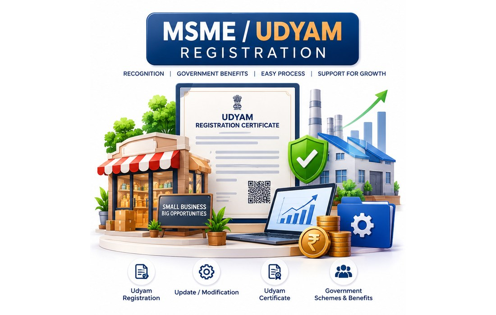

← Service areas
KVB ENTERPRISES • PUDUCHERRY
MSME / Udyam in Puducherry
Local professional assistance with clear document guidance, application support and personal follow-up.

MSME / Udyam Registration in Puducherry
Practical Udyam registration and update assistance for eligible businesses in Puducherry, with clear information on classification, required details, process and professional assistance.
Looking for the full guide? Our detailed MSME / Udyam page covers current classification limits, who can register, information required, benefits, schemes, FAQs and the application process.
Read the complete MSME / Udyam guideEligibility • Categories • Documents/Information • Process • FAQ • ApplyWhatsApp VivianGet help with a new registration or eligible update.
Local assistance in Puducherry
- New Udyam / MSME registration assistance
- Existing Udyam update and correction assistance
- Business activity / NIC information guidance
- Information checklist support
- Related GST, FSSAI, ITR and business-compliance guidance
KVB ENTERPRISES is an independent professional assistance service and is not a government department or government portal.